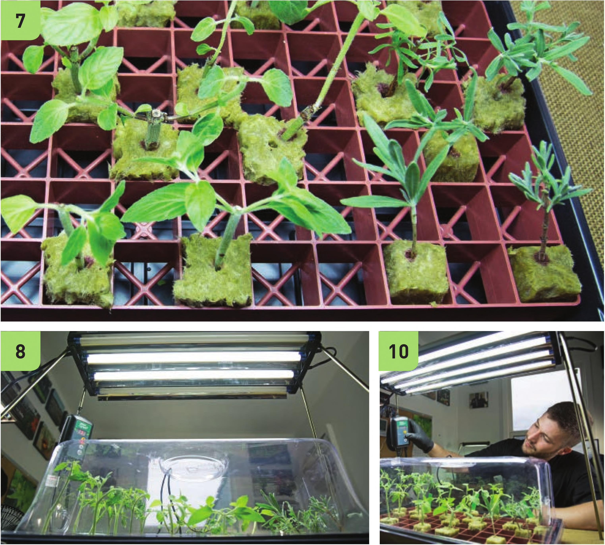

7 Try to avoid leaves touching, which can create areas of excessive moisture and increase risk of fungus. 8 Snugly place the humidity dome onto the tray and place under a low-intensity light. I turned off two bulbs in this four-bulb light to reduce the potential of stressing out my cuttings before they have a chance to establish roots. 9 If your cuttings are drying out before establishing roots, try removing more leaves to reduce transpiration, decreasing light intensity, adding water to the bottom of the tray to increase humidity, adjusting the humidity dome vent to keep in more humidity, or adjusting the heat mat temperature. If adding water to the bottom of the tray, do not add so much that the cubes are sitting in water. 10 A heat mat with a controller is great for speeding up the rooting process. Most gardeners target 70° to 80°F. 11 Cuttings should be slowly acclimated to normal humidity levels by incrementally opening up the dome vents. 12 Some plants root very quickly from cuttings, in less than a week, but most will require a couple of weeks or more until they have enough roots to be transplanted into a hydroponic garden. Cuttings can be transplanted when roots emerge from the stone wool cube. STARTING SEEDS AND CUTTINGS 145
